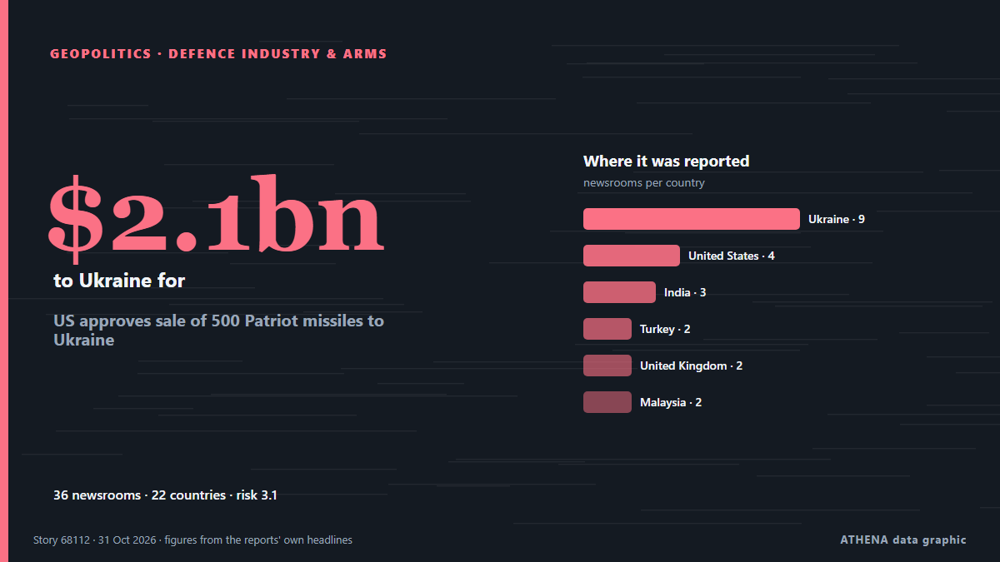

Defence industry & arms
| 18 Oct | 0 |
|---|---|
| 19 Oct | 0 |
| 20 Oct | 0 |
| 21 Oct | 0 |
| 22 Oct | 0 |
| 23 Oct | 0 |
| 24 Oct | 0 |
| 25 Oct | 1 |
| 26 Oct | 0 |
| 27 Oct | 0 |
| 28 Oct | 0 |
| 29 Oct | 1 |
| 30 Oct | 2 |
| 31 Oct | 0 |

US approves sale of 500 Patriot missiles to Ukraine
The American-made interceptors are the only effective weapon for downing Russia's ballistic missiles. from BBC News
6.7Importance
2.8Risk · moderate
92%Confidence
Elsewhere in Geopolitics, Politics & Security
More ›The other sub-sections of Geopolitics, Politics & Security right now.